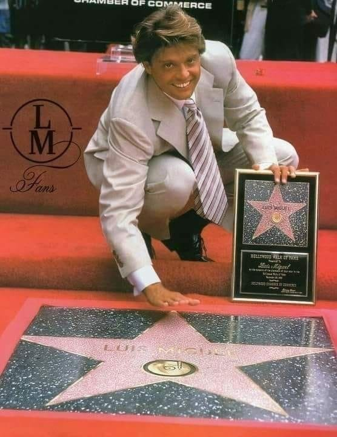

 "Sus principios A sus 23 años, el 22 de junio de 1993 repite como productor con el disco Aries, con el cual retorna a los géneros de la balada, pop latino y arreglos de música funk. Por este disco recibió su segundo Grammy (en la categoría Best Latin Pop Album). Ganó dos premios Lo Nuestro en las categorías de Pop Artist of the Year y Best Pop Album, premios Billboard al Mejor Artista Masculino del año y Mejor Álbum del año, y consiguió más de cuarenta discos de platino y seis discos de oro en el mundo. Para este álbum, el compositor y músico dominicano Juan Luis Guerra le aportó su balada. Hasta que me olvides que se convirtió en uno de los temas más promocionados de este álbum. Es el primer cantante latinoamericano que consiguió un lleno absoluto en el Madison Square Garden de Nueva York y que agotó las entradas cuatro veces consecutivas en el Universal Amphitheater de Los Ángeles, repitiendo este hecho también con tres fechas en el Knight Center de Miami.